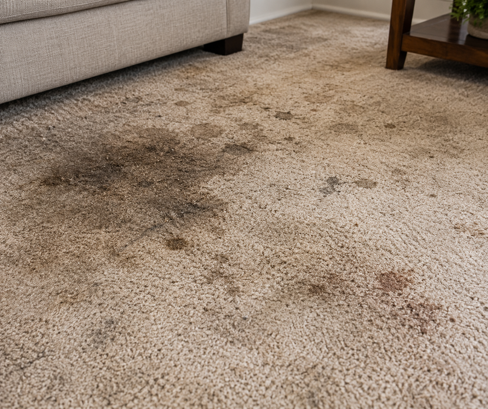

Carpet Cleaning
Carpet Cleaning
7 simple ways to keep your carpets looking fresh
Learn practical carpet-care habits that can help reduce everyday dirt, dust and stains.
Read MoreDiscover expert carpet and upholstery cleaning tips, helpful maintenance advice, and simple ways to keep your home looking fresh and beautiful.
Practical tips and professional advice to help you care for every surface in your home.

Carpets collect dust, allergens, stains, and everyday dirt that regular vacuuming cannot completely remove. Discover how professional cleaning can refresh your carpets and improve the appearance of your living space.
Learn easy ways to maintain carpets, sofas and upholstery between professional cleaning visits.
Carpet Cleaning
Learn practical carpet-care habits that can help reduce everyday dirt, dust and stains.
Read More Upholstery
Upholstery
Keep your favourite sofa looking comfortable and fresh with these simple maintenance tips.
Read More Home Care
Home Care
Small cleaning routines can make a big difference in keeping your home comfortable and welcoming.
Read More Cleaning Tips
Cleaning Tips
Quick action can help prevent some spills from becoming difficult stains. Here is what to do.
Read More Carpet Cleaning
Carpet Cleaning
Cleaning frequency depends on household activity, pets, children and the type of carpet you have.
Read More Upholstery
Upholstery
Discover some common mistakes people make when trying to clean sofas and upholstered furniture.
Read More
Professional carpet and upholstery cleaning goes beyond removing visible dirt. The right cleaning process can refresh your furniture, improve the appearance of your rooms and help extend the life of your carpets.
Remove embedded dirt and everyday buildup.
Professional methods designed for your surfaces.
Enjoy a cleaner and more comfortable space.
Simple things you can do every week to keep your carpets and upholstery looking their best.
Regular vacuuming helps remove loose dirt before it becomes embedded deep inside carpet fibres.
Acting quickly after a spill can help prevent it from becoming a difficult stain.
Regularly remove dust and crumbs from sofas and chairs to keep upholstery looking fresh.
Professional deep cleaning can help maintain your carpets and furniture over time.
Professional cleaning can make a visible difference to carpets, rugs and upholstered furniture.

BEFORE
AFTER
A refreshed carpet after professional deep cleaning.
 BEFORE
BEFORE
 AFTER
AFTER
Give your favourite furniture a fresh new appearance.
Find answers to some of the most common carpet and upholstery cleaning questions.
Cleaning frequency depends on factors such as household activity, pets, children and the amount of foot traffic your carpet receives. Regular professional cleaning can help maintain its appearance and condition.
Yes. Many types of upholstered furniture can be professionally cleaned. The cleaning method should be selected according to the fabric and care requirements of the furniture.
It is generally best to deal with spills as soon as possible. Gently blotting the affected area can help prevent the liquid from spreading further.
Professional cleaning can help remove dirt and substances that contribute to unwanted odours. Results depend on the source and severity of the odour.
Basic maintenance such as vacuuming can be done at home. For deeper cleaning, it is important to follow the furniture manufacturer's care instructions and use a suitable cleaning method.